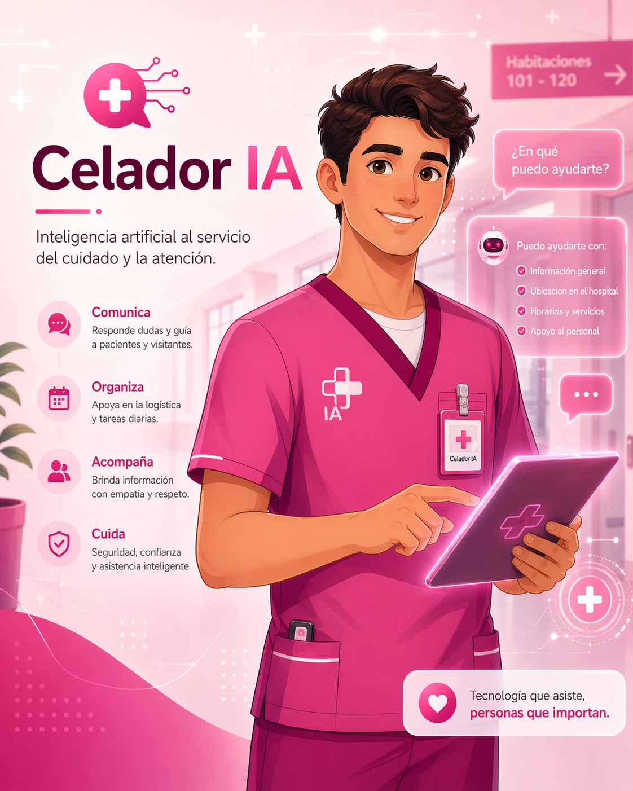
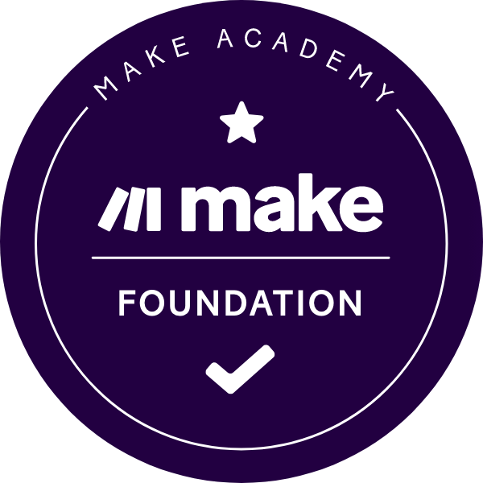

AI
Asistentes virtuales
Diseño asistentes capaces de responder dudas frecuentes, guiar al usuario y mejorar la atención al cliente.
Ayudo a pequeños negocios, profesionales y proyectos digitales a ahorrar tiempo, ordenar procesos y comunicarse mejor usando inteligencia artificial, automatización y herramientas digitales fáciles de entender.
Sobre mí
Soy Cristina Boroc Fodor y me estoy especializando en inteligencia artificial aplicada, automatización y soluciones digitales para negocios.
Me interesa la tecnología cuando sirve para algo concreto: responder mejor a un cliente, ahorrar tiempo en tareas repetitivas, ordenar información, crear contenido útil o hacer que un negocio tenga una presencia digital más clara.
Combino experiencia en atención al cliente, gestión, comunicación y herramientas digitales para crear soluciones cercanas, comprensibles y orientadas a resultados.
Me gusta convertir procesos confusos en soluciones simples, visuales y fáciles de usar.
Habilidades
Combino organización, análisis y criterio técnico para crear soluciones claras.
Diseño recursos funcionales y adaptados a cada proyecto.
Diseño asistentes capaces de responder dudas frecuentes, guiar al usuario y mejorar la atención al cliente.
Creo flujos con Make para reducir tareas repetitivas, conectar aplicaciones y ordenar procesos de trabajo.
Genero ideas, textos, publicaciones, calendarios y estructuras de contenido adaptadas a cada negocio.
Trabajo palabras clave, estructura de contenido y mejoras para que una web se entienda mejor y sea más visible.
Creo experiencias conversacionales para responder preguntas, orientar al usuario y reducir tareas repetitivas.
Aplico lógica de programación, análisis inicial de datos y automatización para construir recursos digitales útiles.
Proyectos
Una selección de asistentes, chatbots y recursos digitales pensados para resolver necesidades reales.
Soluciones enfocadas en comunicación, contenido y atención al cliente.
Contenido con IA
GPT personalizado diseñado para ayudar a pequeños negocios a crear ideas de contenido adaptadas a su sector, tono y objetivos.
Resultado: ideas listas para adaptar y publicar en redes sociales.
IA generativa
Recurso visual creado con inteligencia artificial para reforzar presentaciones, demos y comunicación digital.
Resultado: demo visual útil para marca personal, formación o presentación de servicios.

Chatbot educativo
Chatbot educativo pensado para resolver dudas frecuentes relacionadas con el puesto de celador, temario, funciones y situaciones prácticas.
Resultado: orientación rápida y accesible para estudiantes o personas interesadas en el área sanitaria.
Ecommerce
Demo de asistente virtual para una tienda online de moda. Responde dudas sobre pedidos, envíos, devoluciones, tiendas físicas y formas de contacto.
Resultado: experiencia de compra más fluida y soporte inicial automatizado.
Ecommerce propio
Creación y gestión de página web de ecommerce, redes sociales, planificación de contenido, campañas de publicidad digital, SEO, uso de IA para contenido y análisis de resultados.
Estado: proyecto en fase de mejora y redefinición estratégica.
Herramientas
Conocimientos y plataformas que utilizo en mi día a día, organizados por áreas
para aplicar la tecnología de forma práctica y estratégica.
Asistente conversacional para investigación, creación de contenido y estructura de ideas.
IA aplicadaInvestigación, apoyo creativo, análisis inicial y generación de ideas.
IA aplicadaApoyo con productividad, documentos, organización y comunicación profesional.
IA aplicadaUso de inteligencia artificial generativa para idear, ordenar, redactar y resolver tareas digitales.
IA aplicadaRedacción, análisis profundo y creación de estructuras claras.
IA aplicadaDiseño de instrucciones claras para obtener mejores respuestas y resultados con IA.
IA aplicadaAutomatización de procesos e integración de herramientas sin código.
AutomatizaciónFlujos para reducir tareas repetitivas, conectar aplicaciones y ordenar procesos.
AutomatizaciónGestión y análisis de redes sociales, contenidos y métricas.
Marketing digitalPlanificación de acciones digitales, contenidos, campañas y comunicación online.
Marketing digitalEstructura de contenidos, palabras clave y mejora de visibilidad online.
Marketing digitalOrganización de páginas, recursos visuales, ecommerce y presencia digital profesional.
Marketing digitalAplicación de herramientas digitales para mejorar procesos y comunicación de pequeños negocios.
Marketing digitalOrganización de información, proyectos, bases de conocimiento y recursos.
ProductividadGestión documental, colaboración, formularios y organización diaria.
ProductividadDocumentos, presentaciones, hojas de cálculo y recursos profesionales.
ProductividadLógica de programación, automatización básica, análisis de datos y scripts.
Programación y datosInsignias y certificados que respaldan mi formación en IA, automatización, productividad, SEO, contenido digital y programación.
.png)
Cisco Networking Academy
Programación, lógica y automatización aplicada.
Ver certificado
Make Academy
Escenarios, conexión entre aplicaciones y optimización de procesos.
Ver certificadoMicrosoft / LinkedIn Learning
Productividad, documentos y comunicación profesional potenciada con IA.
Ver certificadoFormación SEO y marketing de contenidos
Optimización de contenidos, estructura web, palabras clave y planificación editorial.
Ver certificadoExperiencia en atención al cliente, comunicación con usuarios, resolución de dudas y adaptación a contextos dinámicos.
Organización de tareas, comunicación clara, resolución de incidencias y colaboración con equipos.
Creación y gestión de una tienda online, redes sociales, contenido digital, SEO, análisis y comunicación con clientes.
IES Ribera del Tajo 2022 – 2026
Ébora Formación 2022 – 2023
IES Puerta de Cuartos 2019 – 2021
Automatización, asistentes virtuales, herramientas no-code, aplicación de IA en empresa, ética y legislación.
Ecommerce, marketing digital y gestión de negocios online.
Análisis de datos y uso de herramientas BI para la toma de decisiones.
Gestión de redes sociales, análisis de métricas y reporting.
Diseño web, ecommerce y marketing digital.
FAQ
Respuestas claras sobre mi forma de trabajar, herramientas y tipo de soluciones.
Creo asistentes virtuales, chatbots, automatizaciones, recursos de contenido y estructuras digitales pensadas para simplificar tareas y mejorar la comunicación.
Para pequeños negocios, profesionales, tiendas online y proyectos digitales que quieren aplicar IA de forma clara, práctica y fácil de mantener.
Trabajo con ChatGPT, Gemini, Copilot, Claude, Make, Metricool, Notion, Google Workspace, Microsoft Office, Python, SEO, marketing digital y automatización.
Sí. Puedo crear asistentes y chatbots que respondan dudas frecuentes, orienten al usuario y reduzcan tareas repetitivas.
Sí. Puedo crear ideas de contenido, textos, calendarios, publicaciones y estructuras adaptadas al tono y objetivo del negocio.
Primero reviso la necesidad del proyecto, después propongo una solución sencilla y visual, y finalmente preparo los recursos o automatizaciones necesarios.
Contacto
Si tienes un proyecto, negocio o proceso que necesita más claridad, puedo ayudarte a darle forma con soluciones digitales sencillas, útiles y bien estructuradas.
Escríbeme para hablar sobre asistentes virtuales, automatización, contenido digital o mejoras en tu presencia online.